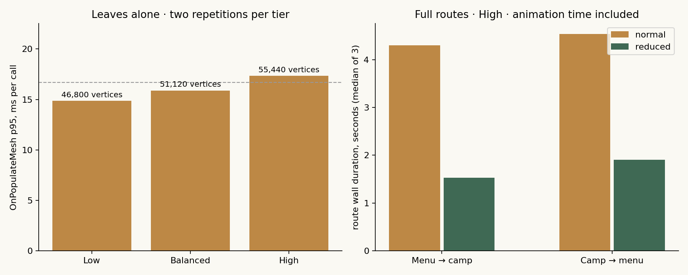
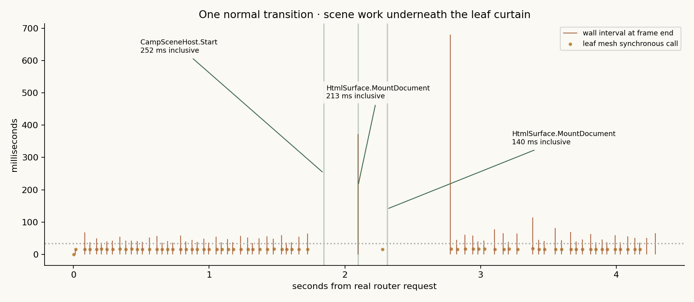
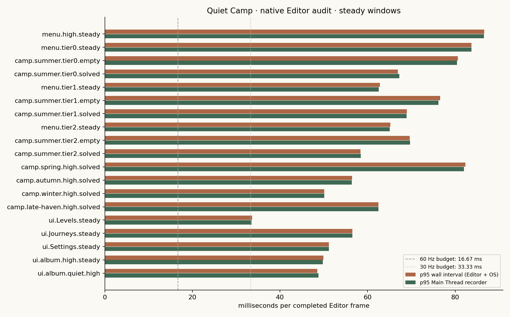

p95 одного High mesh rebuild; 55 440 вершин. Закрита завіса також перебудовується.
Native Unity Editor · звіт 09.10.2026 · checkpoint c9c7bf5
Де гра втрачає плавність
Перехід із листям має важку перебудову UI mesh та синхронне створення сцени під завісою. Ця сторінка дає переглянути виміряні кадри, методи й маршрути. Оптимізації ще відкриті; Passed test означає завершений сценарій.
Кадр у повторних High переходах. Reduced motion скорочує рух, але зберігає activation hitch.
Найдовший кадр основної матриці. HTML mount усередині нього займає 1.19 с.
Editor Game View 720 × 1600 · i7-2600 / GT 730 / OpenGL · 6 140 кадрів основної матриці. Wall interval включає Editor та ОС; ці цифри не є FPS телефону. GPU timing недоступний.
Дані й сценарії
Завантажую перевірені дані…
| Сценарій | Кадри | Wall p50 | Wall p95 | Wall max | Main Thread p95 | Кадри >100 мс |
|---|
Timeline завершених кадрів
Обери сценарій для перегляду.
Зелена риска — завершений кадр; пунктир — 33.33 мс (бюджет 30 Hz). Дані diagnostic scan frames вилучені. Наведи курсор на графік, щоб побачити frame/stage/state. Рух у звичайному переході має близько 3.22 с запланованої тривалості.
Найважчі синхронні методи
Inclusive wall time: вкладені виклики не можна додавати. Scope allocations недоступні; нулі не означають відсутність виділень пам'яті.
| Метод | Виклики | p50, мс | p95, мс | max, мс | Де був max |
|---|
Які counters недоступні
Статичні графіки для звіту



Завантажити й повторити аналіз
Використано вже відкритий Editor та окремі synthetic QA saves. Нового Editor/player build/ADB command не було; original save hashes і shared ADB preferences збережено. Реальний телефон, GPU profile, тривалий soak і всі gameplay input paths потребують окремої перевірки.